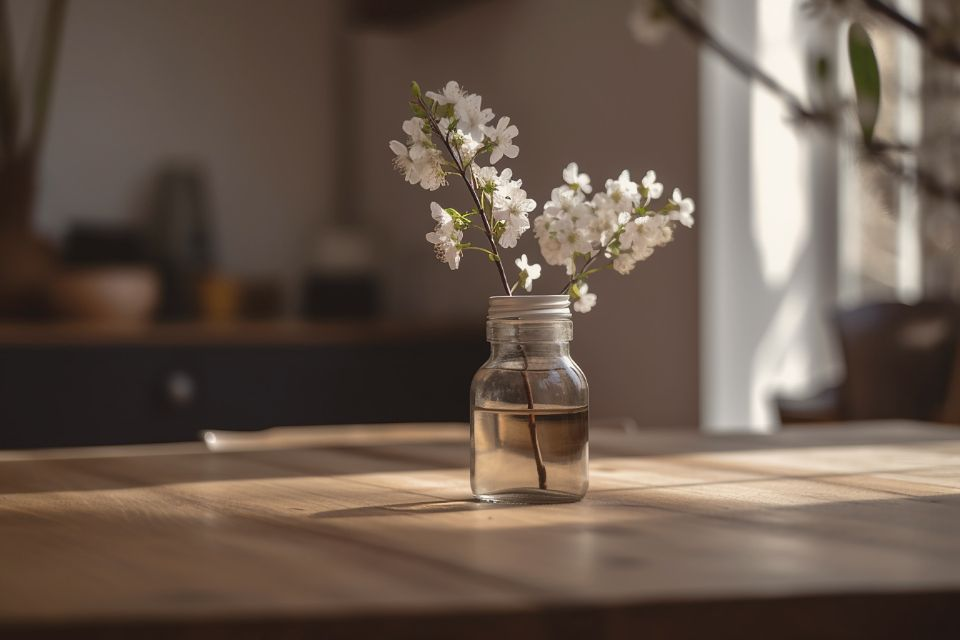
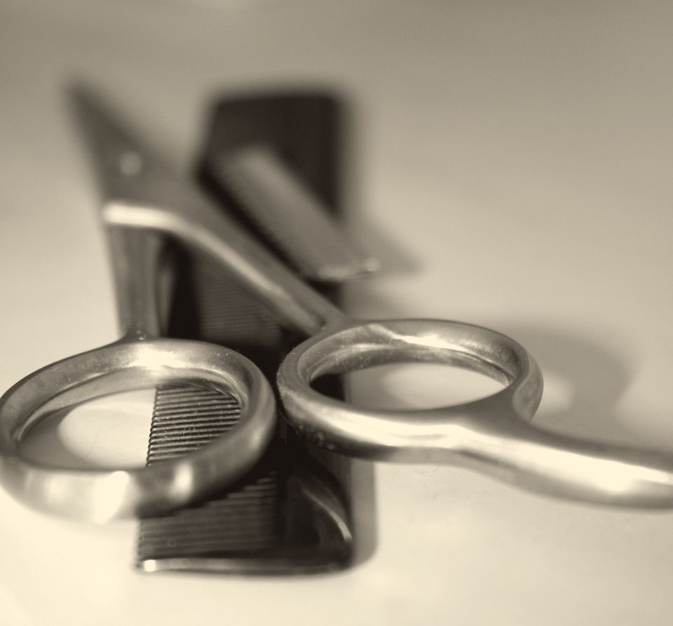
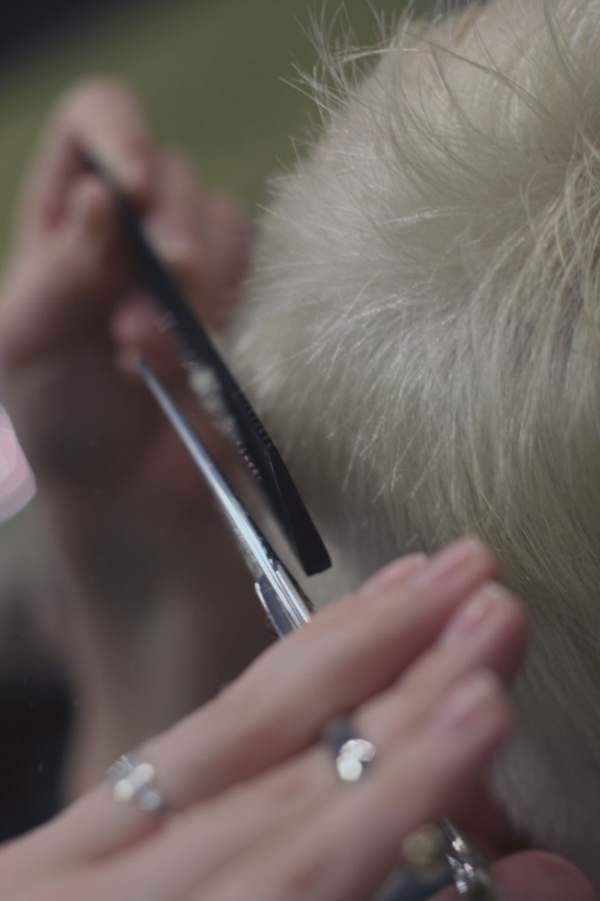

Kolmen kampaajan hiljainen huone Tampereen keskustassa. Leikkaamme, värjäämme ja kampaamme kiirehtimättä – niin, että hiukset näyttävät hyvältä vielä viikkojen päästä, eivät vain peilin edessä.
Kuura syntyy hiljaa yön aikana, kide kerrallaan. Samoin ajattelemme hiuksia: kaunein lopputulos ei synny kiireessä, vaan pienistä, harkituista eleistä, jotka kestävät.

02 Aamu ennen ensimmäistä asiakasta
Kampaamokäynnin pitäisi tuntua hengähdystauolta.
Kampaamo Kuura syntyi vuonna 2016 yksinkertaisesta ajatuksesta. Aino halusi tehdä työtä, jossa jokaiselle asiakkaalle jää aikaa – aikaa kuunnella, kysyä ja tehdä työ loppuun asti.
Emme täytä kalenteria äärimmilleen. Kerromme rehellisesti, mikä juuri sinun hiuksillesi sopii, myös silloin kun vastaus on ”ei vielä”.
Perustettu
2016
Kampaajaa
3
Työpistettä
4
Min / käynti
90
03 Sali aamupäivän valossaNeljä tuolia, yksi pesupaikka, ei kiirettä
02Käsityö
Käynti, joka etenee omassa tahdissaan.
Jokainen käynti kulkee saman rauhallisen kaaren. Se on meidän tapamme varmistaa, ettei mikään jää arvailun varaan – ei väri, ei pituus eikä se, miten hiukset laitetaan kotona.


01 / 04
01
Keskustelu
Ennen kuin sakset otetaan esiin, istumme alas. Kysymme, miten hiuksesi käyttäytyvät arjessa, mitä toivot – ja mitä et halua enää koskaan.
Noin 10 minuuttia · aina mukana
02
Pesu ja hieronta
Lämmin vesi, rauhallinen päänahkahieronta ja tuotteet, jotka valitaan hiustesi eikä hyllyn mukaan. Käytämme vegaanisia ammattilaistuotteita ja suosimme pohjoismaisia valmistajia.
Noin 15 minuuttia
03
Työ
Leikkaamme ja värjäämme kiirehtimättä. Mieluummin millin liian vähän kuin sentin liikaa – hiuksia voi aina lyhentää, mutta ei pidentää.
Palvelun mukaan
04
Viimeistely
Näytämme, miten saat saman lopputuloksen kotona viidessä minuutissa, ja kirjaamme sävyt ja mitat muistiin seuraavaa kertaa varten.
Kotihoito-ohjeet mukaan
i
Kiireetön aika
Jokaiselle käynnille on väljästi aikaa. Seuraava asiakas ei odota ovella.
ii
Harkitut tuotteet
Vähemmän, mutta parempaa. Jokainen hyllyn purkki on valittu syystä.
iii
Rehellinen neuvonta
Kerromme suoraan, mikä on mahdollista, kauanko se kestää ja mitä se maksaa.
03Palvelut
Palvelut ja hinnasto
Hinnat ovat selkeät, eikä laskussa ole yllätyksiä. Jos hiuksesi ovat erityisen pitkät tai paksut, kerromme mahdollisesta lisähinnasta aina etukäteen.
Jokaiseen käyntiin sisältyy
Alkukeskustelu
Pesu ja päänahkahieronta
Viimeistely ja kotihoito-ohjeet
I Leikkaukset
Naisten hiustenleikkaus60 min · pesu ja muotoilu69 €
Miesten hiustenleikkaus45 min49 €
Lasten hiustenleikkausalle 12-vuotiaat · 30 min35 €
Parranmuotoilu30 min29 €
Otsatukan siistiminen15 min15 €
II Värit
Värjäystyvestä latvoihin · noin 2 halk. 119 €
Tyvivärjäysnoin 1 h 30 minalk. 95 €
Raidat tai balayage2,5–3 h · sisältää sävytyksenalk. 169 €
Sävytys ja kiiltohoito45 min59 €
III Kampaukset ja hoidot
Juhlakampausnoin 60 minalk. 79 €
Hääkampaussisältää koekampauksen189 €
Föönikampauspesu ja muotoilu · 45 min45 €
Syvähoitoleikkauksen tai värin yhteydessä25 €
Hinnat sisältävät arvonlisäveron. Lopullinen hinta sovitaan aina alkukeskustelussa, ennen kuin työ aloitetaan.
04Tekijät
Kolme kampaajaa, yksi tapa tehdä.
Jokaisella meistä on oma vahvuutensa, mutta työtapa on yhteinen: kuunnellaan ensin, leikataan sitten.
01 — Perustaja
Aino
Kampaaja ja yrittäjä
Aino perusti Kuuran vuonna 2016. Hänen käsissään syntyvät helppohoitoiset leikkaukset ja pehmeät värit, jotka kasvavat ulos huomaamattomasti.
02 — Värit
Emilia
Värjäyksiin erikoistunut kampaaja
Emilia rakentaa vaaleat sävyt ja balayage-värit kerros kerrallaan, hiusten kunnosta tinkimättä. Hän neuvoo mielellään myös värin kotihoidossa.
03 — Leikkaukset
Joonas
Parturi-kampaaja
Joonas tekee tarkat miesten leikkaukset ja parranmuotoilut. Häneltä saat leikkauksen, jonka laittaminen kotona vie alle viisi minuuttia.
05Galleria
Meidän käsialaamme
Luonnollisia sävyjä, pehmeitä muotoja ja leikkauksia, jotka toimivat myös arjessa.